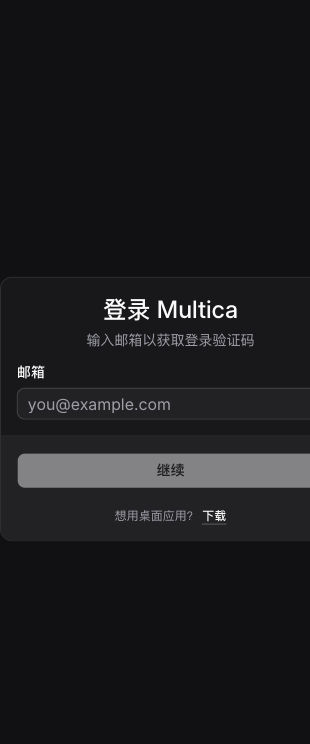
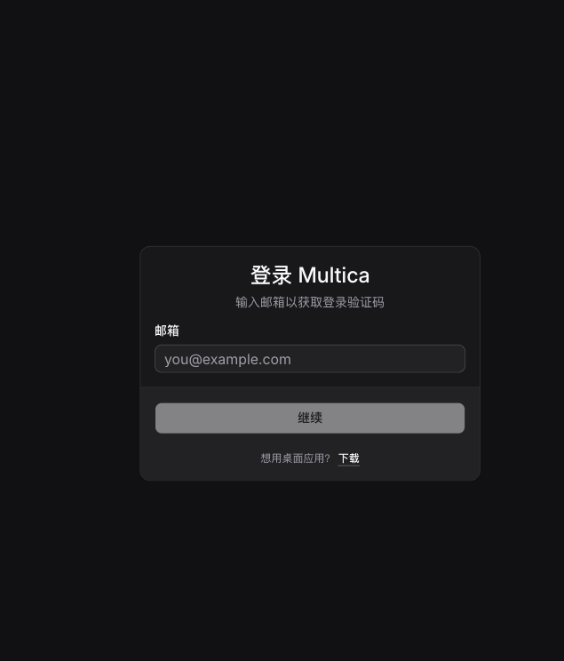
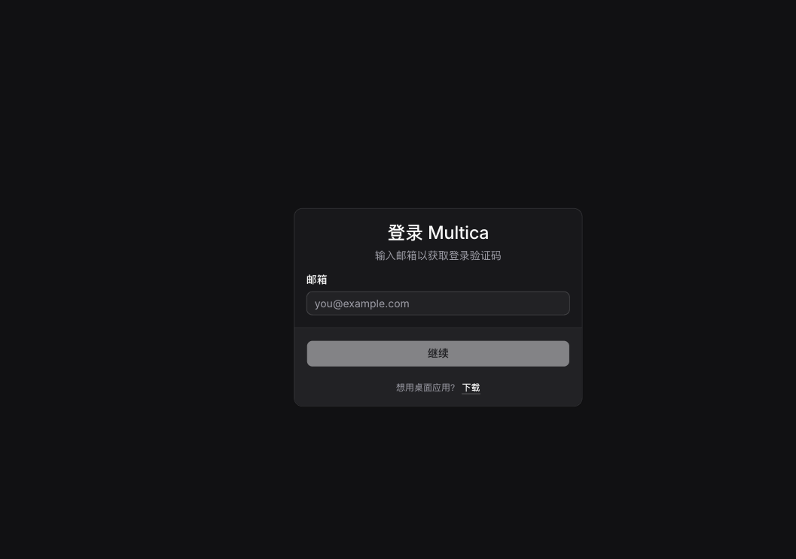

盘点基线：仓库路由与共享页面静态清单 + Web 登录页真实浏览器截图。目标视口为 375px、768px、1280px；浏览器运行时报告的 CSS viewport 分别为 341px、698px、1163px（Ego Lite 保留浏览器滚动条）。
| 页面 | 375 | 768 | 1280 | 结论 |
|---|---|---|---|---|
/login | 无横向溢出；表单可见 | 无横向溢出 | 无横向溢出 | 基础布局通过；375px 卡片贴近边缘，需在登录/引导子票核对安全区与键盘顶起。 |



| 页面组 | 覆盖页面 | 当前结论 | 子票 |
|---|---|---|---|
| 工作区核心 | 收件箱、我的任务、任务列表/看板、任务详情、新建任务草稿、项目列表/详情 | 待三档真实走查；共享任务表/看板已有横向滚动实现，需确认手机端入口与返回栈。 | workspace-core |
| 协作与资源 | 聊天列表/会话、智能体列表/详情/新建、小队、技能、自动化、运行时、成员、用量、账单、设置、关联工作区、附件预览 | 待三档真实走查；详情页统一检查返回、表格/日志溢出和触屏操作。 | resources |
| 全局外壳 | 侧边栏/抽屉、顶栏、全局搜索、弹窗/Sheet、浮动聊天、toast | 抽共性优先；返回手势、安全区、44px 触控区影响多页面。 | shell |
| 登录与引导 | 登录、注册、onboarding、新建工作区、邀请列表/单条、加入、auth 回调 | /login 已通过溢出初检；键盘、安全区与侧滑返回仍需现场走查。 | auth |
| 第三方绑定 | 钉钉、飞书、Slack、Telegram、企业微信 bind、账单回跳 | 待三档真实走查；重点是回跳失败态和窄屏错误文案。 | integrations |
| 官网落地页 | 首页、下载、用例、changelog 等 | 低优先级；独立页面族，需检查长文、代码块和下载 CTA。 | landing |
packages/views/navigation/use-back-or-replace.ts、use-back-to-dismiss.ts。packages/views/platform/scroll-restoration.tsx。packages/views/issues/surface/issue-surface.tsx、packages/views/issues/components/board-view.tsx。packages/views/common/scroll-to-bottom-button.tsx，需抽成全局验收项。本报告不把静态 CSS 推断当成“已修复”。除登录页截图外，页面组均标为待真实浏览器走查；各子票须附修复前截图、HTML 预览稿，并在 375/768/1280 三档补齐证据。